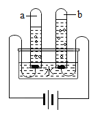
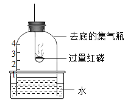
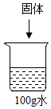

2018年北京市中考化学真题 · 选择题 第6、7、8、9、10题 · 对应解析
6. 下列符号中，表示2个氯原子的是
A. Cl2B. 2Cl2C. 2ClD. 2Cl-
【答案】C
【解析】
【详解】试题分析∶表示2个氯原子的是C．2Cl.
考点∶考查化学符号的意义。
7. 下列物质能与NaOH反应的是
A. FeB. CO2C. Fe2O3D. NaCl
【答案】B
【解析】
【详解】A、铁不能与氢氧化钠反应，故错误；
B、二氧化碳可以与氢氧化钠反应生成碳酸钠和水，故正确；
C、氧化铁不能与氢氧化钠反应，故错误；
D、氯化钠不能与氢氧化钠反应，故错误。故选B。
8. 电解水实验如下图。下列说法正确的是

A. 试管b中得到H2B. 产生H2与O2的体积比约为1:2
C. 该实验说明水是由H2和O2组成D. 可用带火星的木条检验生成的O2
【答案】D
【解析】
【详解】A、电解水实验中，与正极相连的试管中收集的是氧气，故A错误；
B、电解水时，产生H2与O2的体积比约为2:1，故错误；
C、水通电后生成氢气和氧气，氢气和氧气是由氢元素和氧元素组成，故该实验说明水是由H、O元素组成，水是纯净物，水中不含有氢气和氧气，故错误；
D、氧气具有助燃性，可使带火星的木条复燃，故正确。故选D。
9. 用下图装置进行实验。下列现象能证明空气中O2的含量的是

A. 红磷燃烧，产生白烟B. 瓶中液面先下降，后上升
C. 瓶中液面最终上升至1处D. 水槽中液面下降
【答案】C
【解析】
【详解】A、红磷燃烧，产生白烟，说明氧气支持燃烧，不能说明氧气的含量，故错误；
B、瓶中液面先下降，后上升，说明反应放热，不能具体的说明氧气的含量，故错误；
C、瓶中液面最终上升至1处，说明空气中氧气占总体积的1/5，正确；
D、水槽中液面下降只能说明空气中氧气的体积减少，不能具体的说明氧气的含量，故错误。故选C。
依据下列20℃时的实验和数据回答下列小题。
已知20℃时，NaCl和NaNO3的溶解度分别为36g和88g。
 | 序号 | ① | ② | ③ | ④ | ⑤ |
固体种类 | NaCl | NaCl | NaNO3 | NaNO3 | NaNO3 | |
固体的质量/g | 30 | 60 | 30 | 60 | 90 | |
水 | 100 | 100 | 100 | 100 | 100 |
 质量/g
质量/g
10. ①～⑤所得溶液属于饱和溶液的是（ ）
A. ①③B. ②④C. ②⑤D. ④⑤